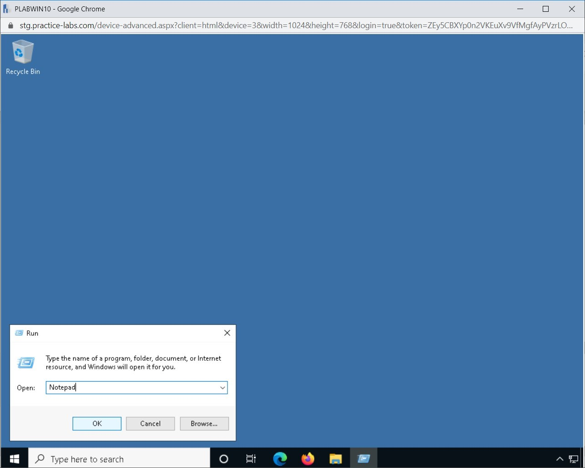
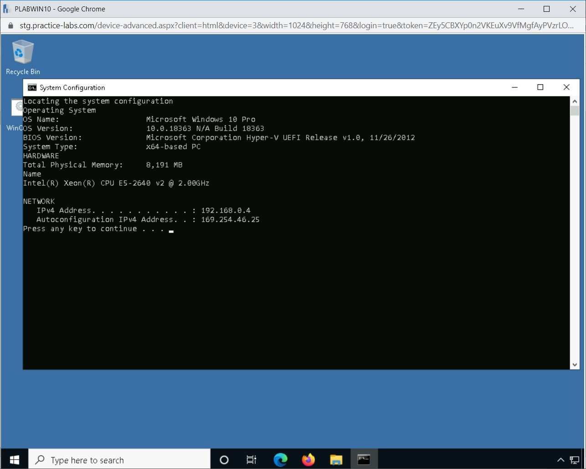

Introduction
9beca326-b493-4b0e-b3dc-d7dfb77df3c9
Welcome to the Automation Concepts Practice Lab. In this module, you will be provided with the instructions and devices needed to develop your hands-on skills.
dc640c20-9434-45ea-b7c2-6d4d6a196bfc
Learning Outcomes
In this module, you will complete the following exercises:
- Exercise 1 - Automation Concepts
After completing this module, you will be able to:
After completing this module, you will have further knowledge of:
- Workflow Orchestration
- An Application Programming Interface (API)
- Automated Malware Signature Creation
- Data Enrichment
- Machine Learning
- Use of Automation Protocols and Standards
- Continuous Integration
- Continuous Deployment/Delivery
Exam Objectives
The following exam objectives are covered in this lab:
- 3.4 Compare and contrast automation concepts and technologies
Note: Our main
focus is to cover the practical, hands-on aspects of the exam
objectives. We recommend referring to course material or a search engine
to research theoretical topics in more detail.
Lab Duration
It will take approximately 1 hour to complete this lab.
1b317064-7b0c-48e0-845c-05a2d99e80c5
Help and Support
For more information on using Practice Labs, please see our Help and Support page. You can also raise a technical support ticket from this page.
Click Next to view the Lab topology used in this module.
d2c53300-f951-45a9-9aa4-3d4ecae69e11
Lab Topology
During your session, you will have access to the following lab configuration.

Depending on the exercises, you may or may not use all
of the devices, but they are shown here in the layout to get an overall
understanding of the topology of the lab.
- PLABDC01 - (Windows Server 2019 - Domain Server)
- PLABDM01 - (Windows Server 2019 - Domain Member)
- PLABKALI01 - (Kali Linux 2019 - Linux Kali)
- PLABWIN10 - (Windows 10 - Domain Member Workstation)
- PLABCENTOS - (Centos 8 Linux - Stand-alone Linux Server)
- PLABALIENVAULT - (Alien Vault Linux Security Management Platform)
Click Next to proceed to the first exercise.
<
AutomationConcepts |
README >
CompTIA Cybersecurity Analyst (CySA+) Practice Labs
Exercise 1 - Automation Concepts
Automation is about removing the manual intervention
of doing a task. It can be done with certain tools and technologies in
an automated manner where there is little or no manual intervention is
required. Automation in IT helps you with performing certain repeatable
tasks and processes and provides the same results.
Automation in IT provides several benefits, such as
increased productivity and better results. In this exercise, you will
learn about various automation concepts.
Learning Outcomes
After completing this exercise, you will be able to:
After completing this exercise, you will have further knowledge of:
- Workflow Orchestration
- An Application Programming Interface (API)
- Automated Malware Signature Creation
- Data Enrichment
- Machine Learning
- Use of Automation Protocols and Standards
- Continuous Integration
- Continuous Deployment/Delivery
Your Devices
You will be using the following devices in this lab. Please power on this device.

- PLABDC01 - (Windows Server 2019 - Domain Server)
- PLABWIN10 - (Windows 10 - Domain Member Workstation)
Task 1 - Scripting
In a normal scenario, you can perform one task at a
time, which is not helpful when it may have to be repeatedly done. You
have two options. The first option is to keep performing the task manual
way, with the second to automate the task, which is far more efficient.
Different platforms have different methods of creating scripts. For
example, consider the two key operating systems:
- Windows: You can create a batch file or a PowerShell script.
- Linux: You can create a shell script.
Let’s assume that you have to find the system
configuration in Windows, and you have several systems. You can either
keep manually collecting the information or simply run a batch file or
PowerShell to find the information in a few seconds. In this task, you
will learn to create a batch file and run it on a Windows system. To do
this, perform the following steps:
Step 1
Ensure that you have powered on the required devices. Connect to PLABWIN10. The desktop is displayed.
Figure 1.1 Screenshot of PLABWIN10: Showing the desktop of PLABWIN10.
Step 2
Right-click Start and then select Run.
Figure 1.2 Screenshot of PLABWIN10: Right-clicking the Start menu and selecting Run.
Step 3
In the Open text box, type the following:
Notepad
Click OK.
Figure 1.3 Screenshot of PLABWIN10: Entering Notepad in the Open text box and clicking OK.
Step 4
The Notepad window is displayed. Type the following text:
@ECHO OFF
TITLE System Configuration
ECHO Locating the system configuration
ECHO Operating System
systeminfo | findstr /c:"OS Name"
systeminfo | findstr /c:"OS Version"
systeminfo | findstr /c:"System Type"
ECHO HARDWARE
systeminfo | findstr /c:"Total Physical Memory"
wmic cpu get name
ECHO NETWORK
ipconfig | findstr IPv4
PAUSE
Note: The above script contains the following important commands:
@ECHO OFF — Disables the command prompt when the script is running.
TITLE — Displays the name on the title bar of the window
:: — Is used for comments, which are not displayed when the batch file is run.
ECHO — Displays the given text on the screen.
PAUSE — Stops the window from being closed after the script completes its run. It can also be run after a command.
Alert: Ensure that there is no blank space after /c:. If you add a space, the script will generate an error.
 Figure 1.4 Screenshot of PLABWIN10: Writing the script commands in the Notepad window.
Figure 1.4 Screenshot of PLABWIN10: Writing the script commands in the Notepad window.
Step 5
To save the batch file, click File and select Save.
Figure 1.5 Screenshot of PLABWIN10: Selecting File and then selecting Save.
Step 6
The Save As dialog box is displayed. From the Save as type drop-down, select All Files.
In the left-hand pane, select Desktop. In the File name text box, type the following name:
WinConfig.bat
Click Save.
Figure 1.6 Screenshot of PLABWIN10: Saving the script with the .bat extension on the desktop.
Step 7
The WinConfig.bat file is created on the desktop. Close the Notepad window.
Figure 1.7 Screenshot of PLABWIN10: Showing the saved script in the Notepad window.
Step 8
You have created the batch file. To run the batch file, double-click on it.
Figure 1.8 Screenshot of PLABWIN10: Showing script on the desktop and then double-clicking on it.
Step 9
Notice that a terminal window opens, and the batch file starts to run.
Figure 1.9 Screenshot of PLABWIN10: Showing the script running in the terminal window.
Step 10
The batch file runs for a few seconds and provides the required information.
Figure 1.10 Screenshot of PLABWIN10: Showing the output of the script.
92fea127-9ca7-4825-8147-63c3d2f6f0d4
Step 11
You can press any key to close the terminal window.
Notice that the terminal window closes automatically. You are now back on the desktop.
Figure 1.11 Screenshot of PLABWIN10: Showing the desktop of PLABWIN10.
Workflow Orchestration
A workflow is a series of tasks or activities that
are performed in a predefined sequence. For example, if you need to
access your Email account, you need to first log on to the messaging
server. This is a simple workflow comprising of two activities: logon
first and then access Emails within your account.
Orchestration is putting together different workflows
to achieve the desired result. In an IT environment, you need first to
identify the workflows and then orchestrate them together. Orchestration
is often confused with the term automation, as both have fundamental
differences. Automation is about a single task. For example, you can
automate a backup, or you can deploy an application using an automated
method. Orchestration is about putting together a series of tasks in
different workflows and making them work to get the desired results.
For example, when you perform workflow orchestration,
you deploy an application on the network. The application can then
communicate with the other services on the network using the workflow
orchestration. You can gain an advantage by implementing workflow
orchestration. It can help you streamline and optimize the running
processes and workflows and save time. Some several workflows and
processes can be eased out with workflow orchestration:
- Incident management
- Cloud deployment and orchestration
- Database management
- Application deployment and orchestration
- Server provisioning
This is not an exhaustive list, but some of the key tasks that can be streamlined and optimized with workflow orchestration.
An Application Programming Interface (API)
An Application Programming Interface (API) is a software that enables communication between two different applications. An API takes
the request from one application and delivers it to the second
application. When the second application responds with a response, it is
delivered back to the first application.
Consider the example of an airline’s mobile app. You
start to search for the air tickets to a city on a specific date. You
will toggle with multiple menus and set your requirement. The API’s job
is to go to the database and fetch the information for you. Just like
you, there may be thousands of users who would be sending a similar
request. An API will work instantly and provide the required results based on their search criteria.
APIs are built to provide a specific type of functionality. When an API is created, it can be used with one or more applications depending upon its design. For example, Twitter provides an API that allows you to put Twitter handle on your website. It could be a Web application in which the same API can be used. With the use of the API, the developers save time in re-inventing the wheel. An API is like a plug-and-play module that can be added to the Web application or any other application.
APIs can be categorized into different types:
- Internal: Such APIs are designed to enable communication and data sharing between internal applications.
- Open: Such APIs are available on the Internet and can be used by anyone.
- Partner: Such APIs are available commercially and can be used with a license or subscription fee.
Two types of APIs are in use today:
- Simple Object Access Protocol (SOAP): It is a
protocol that makes use of XML to transfer data between applications.
It is mainly used to define the methods of communication. It is defined
with strict rules and has high security.
- Representational State Transfer (REST): It is
a set of architectural principles. When you define a REST service, it
requires minimal bandwidth and is mainly driven by data.
Automated Malware Signature Creation
As the name suggests, Automated Malware Signature
Generation is about generating a signature based on a specific malware
classification. There are two key tasks in automated malware signature
creation:
- Monitoring: the incoming files are monitored to detect the presence of malware.
- Analyzing: the incoming files are analyzed based on their content as well as behavior.
Once the file is analyzed, a malware signature is based on a specific malware classification.
Data Enrichment
Data enrichment, also known as data appending, is a
method of adding useful information to data to make it meaningful. In
the data enrichment process, you may be combining data from multiple
sources and then merge them to complete the set of records within the
information. The data enrichment process helps an organization make
informed decisions because the data is complete in all senses and can
provide useful insights to the organization.
An organization may collect data from various
sources, such as Email lists or site traffic/user registration. However,
in most cases, the data will be incomplete and will not help the
organization in any way. The organization adds the data to a central
repository. Then, the organization cleans and completes the data by
adding additional information.
There are several benefits to the data enrichment process. The enriched data:
- Helps to provide useful insights
- Helps in targeted marketing
- Helps to build better communication strategies with the customers
- Helps to remove redundant data
Machine Learning
Machine Learning is based on Artificial Intelligence (AI).
Machine Learning enables a system to learn automatically and perform a
certain task without being programmed. The system has to learn from
experience and perform the task. The input to the system is the data
from which the system learns and gains experience without any human
intervention. The system begins the learning process either by
observations or learning through data.
Consider a scenario in which you write a program to
differentiate between an airplane and a car. You have to write the code
that will determine which one is an airplane and which one is the car.
This does not happen in Machine Learning. You have to feed the algorithm
lots of data, for example, images.
Learning is the key task that is performed. Machine
Learning will use a specific method to perform the analysis of the fed
data. Several Machine Learning methods can be used:
- Supervised: This type of method makes use of
prior learning and also the labeled data. The given data is then
analyzed to guess the output values.
- Unsupervised: This type of method identifies
the patterns in the given dataset. There are unlabeled data in this
scenario. It looks for similarities between the given dataset and groups
the data based on the similarities.
- Semi-supervised: This method uses the labeled
and unlabeled data. This data is intended to be used for training.
There are two types of data in this method: a small amount of labeled
data and a large amount of unlabeled data. The labeled data is used to
train the method and then label the unlabeled data.
- Reinforcement: This method allows the systems
to determine the ideal behavior, which is done by trial and error.
There are also rewards, which tell that method that a specific action is
the right action.
Use of Automation Protocols and Standards
Automation is becoming incredibly important in the
industrial sectors. Several protocols are used for this purpose. These
protocols can be either wired or wireless.
Wired
Several protocols fall in the wired category. Some of the key protocols are:
- BACnet: it is mainly used in lighting, fire protection, and physical security. It works with several transport protocols, such as IP, Ethernet, LonTalk, Zigbee, and ARCnet.
- LonWorks: it stands for Local Operating Network. It is used for HVAC and lighting. It can work with several different network topologies, such as Daisy-chain, Star, and mixed.
- KNX: it is used for multiple purposes, such as HVAC, lighting, security, and energy management. It can work with different topologies, such as Tree, Line, and Star.
- DALI: it stands for Digital Addressable Lighting Interface. It is mainly used for lighting purposes. It can work with Line or Star topologies.
Wireless
Similar to the wired protocols, there are several wireless automation protocols. Some of the key ones are:
- EnOcean: it is used with lighting controls and occupancy sensors. It works with the point-to-point topology.
- ZigBee: it is used with HVAC controllers and occupancy sensors. It uses Mesh topology.
Continuous Integration
Continuous integration is a development method in
which developers write code and then integrate said code into a
centralized repository. Integration occurs several times a day. Each
time the code is committed into the centralized repository, it is
compiled into an automated build followed by the automated tests. If the
build fails to compile, the code contains errors. The developer is
notified, and therefore, he or she needs to correct the code and commit
once again. With this process, the errors in the code are detected at an
early stage, before the application is deployed.
The main advantage of continuous integration is that
you do not have to spend time later in the project to find errors. Each
integration is tested at the time of a commit, and then errors are
detected. The typical process in continuous integration is:
Figure 1.12 Diagram of Continuous Integration: Showing the phases of continuous integration.
On the other hand, if you are continuously
integrating code and it is being compiled and tested, then errors are
detected right then and there. Fixing these issues is therefore much
quicker because each code integration is smaller in size, and it is
relatively easy to find errors in a small piece of code.
It is important to note that the longer you wait to
integrate your work, the more issues you will have in finding and fixing
errors. If there are several errors located at the end of the project,
it might simply throw the project off the schedule because fixing those
errors may take a long while.
There are several advantages of continuous integration:
- Integration cycles are smaller and easy to manage
- Errors can be located on the fly because integrations are being done several times a day
- Error detection is early in the project lifecycle
- You know if the code is working or not
- Integration becomes easy to handle because of small pieces of code
Continuous Deployment/Delivery
In Continuous Delivery, you need to perform
continuous integration. After the build is passed, it is deployed
manually either in the test or production environment. Manual deployment
can only take place if all the automated tests are passed.
Figure 1.13 Diagram of Continuous Delivery: Showing the phases of continuous delivery.
There is a small difference between continuous
delivery and continuous deployment. The continuous delivery is performed
manually, whereas continuous deployment is fully automated, which
deploys the build to the test or production server.
Figure 1.14 Diagram of Continuous Deployment: Showing the phases of continuous deployment.
86b3caf2-2504-4e20-a81b-2fcb2368c8d2
Keep all devices that you have powered on in their current state and proceed to the review section.
Review
Well done, you have completed the Automation Concepts Practice Lab.
2abaca70-efa1-4fe5-94fb-ad1777bfc242
9267523f-3604-417a-a93f-669c5ace83d9
ec8c1c1e-b928-472f-ae7b-e908f1387f90
dc1c0ff7-974b-4cfb-b658-ea48083a765f
da8fd078-72d9-4c01-9b41-e3bd4676a2f0
0e4539a1-2af7-4f6b-9d7c-1025cc0eef3b
aaaaaaaa-1111-1111-1111-193f35a24fe3
Summary
You completed the following exercises:
- Exercise 1 - Automation Concepts
You should now be able to:
You should now have further knowledge of:
- Workflow Orchestration
- Application Programming Interface (API)
- Automated Malware Signature Creation
- Data Enrichment
- Machine Learning
- Use of Automation Protocols and Standards
- Continuous Integration
- Continuous Deployment/Delivery
Feedback
067744a4-4299-4662-b5be-04dbb636a007
Shutdown all virtual machines used in this lab. Alternatively, you can log out of the lab platform.